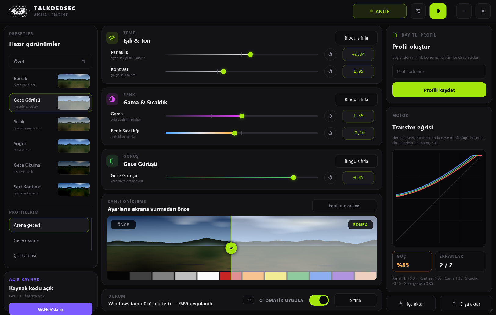

Not a game mod
Nothing is copied into a game folder, no process is opened, no library is injected, no driver is installed. The correction happens in the display pipeline, not in your game.
Five sliders — brightness, contrast, gamma, temperature and night vision — compiled into a gamma ramp and written straight to the display adapter. Games, video, the desktop: everything the panel shows goes through it, and not one millisecond is added to a frame.

The gamma ramp is the same knob a monitor calibration profile turns. Talkdedsec Visual puts a panel on that knob — and keeps it standing up to how Windows, games and other tools actually behave.
Nothing is copied into a game folder, no process is opened, no library is injected, no driver is installed. The correction happens in the display pipeline, not in your game.
Windows rejects ramps that stray too far from linear. Rather than fail, the engine walks the setting down and shows how much survived as a figure that stays on screen.
A game entering exclusive fullscreen, a panel waking up, a resolution change all reset the ramp. The engine looks once a second and puts it back — and steps aside rather than flicker if another tool keeps fighting.
Every display is listed by the name in its own EDID. Leave the second screen or the TV out; the choice follows the panel, not the port, and a display plugged in later is picked up within a second.
The transfer curve is drawn live — one line while the channels agree, red, green and blue once temperature parts them. Preset thumbnails are the same scene pushed through each preset's real curve.
Gamma ramps outlive the process that wrote them. Each display's original is kept at startup and written back on exit — and if the program ever dies, the ramp it left is recognised and cleared at the next start.
It lives in the tray, and a global hotkey from F6 to F12 toggles the effect. If another program already owns the key, the panel says so instead of failing silently.
Name a setting, export it as plain JSON, import it on another machine. A setting you design in the playground below downloads in exactly that format.
Every control carries a name and a role for screen readers; sliders report their value and range. The panel, the tray menu and every message come in English and Turkish.
The scene below is generated the way the app's preview is, and pushed through the same
transfer curve — the code is ported line for line from src/color.rs. Download what you design here as a
profile and open it in the app with Import.
Input along the bottom, output up the side. The diagonal is the display left alone; once temperature parts the channels the line splits into red, green and blue.
Double-click a slider to put it back on neutral. On a real screen Windows may clamp strong settings; the app tells you how much got through.
Each of the 256 input levels goes through five stages in a fixed order. The result is a
256-entry table per channel, handed to SetDeviceGammaRamp on every display you selected and applied by the
display adapter's own hardware.
Lifts shadow out of the black, barely touches highlights.
x += n·0.45·(1−x)^2.2
Ends pinned, midtones reweighted.
x = x^(1/γ)
Pivots on mid grey, opens shadow from highlight.
x = (x − ½)·c + ½
Shifts the whole curve up or down.
x += b
Separates red from blue; green follows lightly.
R·(1+.22t) G·(1−.0132|t|) B·(1−.22t)
Unless GdiIcmGammaRange is widened — which takes administrator rights and a sign-out —
Windows rejects ramps far from linear. Rather than fail, the engine walks down a ladder and stops at the first step the driver takes:
This example is the machine the screenshot above came from: Night Vision was taken at 85%.
The engine reads each display's ramp once a second and compares it with what it last wrote:
| Control | Range | Neutral | What it does |
|---|---|---|---|
| Brightness | −0.35 … +0.35 | 0.00 | Shifts the whole curve up or down |
| Contrast | 0.60 … 1.80 | 1.00 | Opens the gap between shadow and highlight, pivoting on mid grey |
| Gamma | 0.50 … 2.20 | 1.00 | Reweights the midtones while both ends stay pinned |
| Temperature | −1.00 … +1.00 | 0.00 | Warm or cool, by separating red from blue |
| Night vision | 0.00 … 1.00 | 0.00 | Lifts shadow detail out of the black without washing out highlights |
Every value box is editable. Sliders take the keyboard (← → Home End) and the mouse wheel, and a double-click puts one back on neutral. Saturation and hue are deliberately absent: a gamma ramp is one curve per channel and cannot mix channels — a dead slider is worse than a missing one.
With Scoop, which also keeps it updated:
scoop bucket add tlk https://github.com/Talkdedsec/scoop-tlk
scoop install tlk/tlk-visualTo remove it: scoop uninstall tlk-visual
Download talkdedsec-visual.exe from Releases
and run it. One file — no installer, no .NET, no WebView2, no runtime of any kind.
SmartScreen will warn you the first time, because the binary is not code-signed yet. Before choosing More info → Run anyway, check what you downloaded — every release carries a SHA-256 file and a GitHub build attestation you can verify yourself:
Get-FileHash .\talkdedsec-visual.exe -Algorithm SHA256
gh attestation verify talkdedsec-visual.exe --owner TalkdedsecThe only prerequisite is Rust 1.85 or newer. No C++ step, no Python, no node_modules.
git clone https://github.com/Talkdedsec/tlk-visual
cd tlk-visual
cargo build --releaseThe output is target/release/talkdedsec-visual.exe. cargo test holds down the colour maths,
the engine (against a fake driver), the profile store and that both languages are complete.
%APPDATA%\Talkdedsec\Visual\config.jsonTALKDEDSEC_VISUAL_CONFIG to a path of your ownThe program never touches the game's process — nothing is opened, read or injected. What changes is what the display does with the image, not what the game draws. That is not a promise, though: some competitive titles disallow external visual settings that improve visibility, and enforcement is their call. Read the rules of what you play and decide for yourself.
No. The table is written once into the lookup hardware at the adapter's output; nothing is done per frame. In the background the program only reads the table back once a second to compare.
Check HDR first: most drivers ignore the ramp while HDR is on. Then look at the STRENGTH figure — if it says “Paused”, another colour tool is fighting for the display; close it and change any setting. Finally, make sure that display is selected in settings.
Windows refuses ramps far from linear unless the GdiIcmGammaRange registry value is widened.
The program does not do that behind your back — it needs administrator rights and a sign-out. Instead it walks the setting down until one is accepted and tells you how much got through.
Settings → Displays lists every display by its EDID name; number 1 is the main one. A display you leave out gets its original ramp back at once. The choice is tied to the panel and survives a reboot; every selected display gets the same curve.
Briefly, yes — gamma ramps outlive the process that wrote them. Start the program again and the leftover ramp is recognised, because it matches the saved settings, and cleared straight away. Restarting Windows also brings the display's own ramp back.
Turn off “Start with Windows” in settings first — it removes the registry value. Then delete the exe
and the %APPDATA%\Talkdedsec\Visual folder. Nothing else is written anywhere. With Scoop: scoop uninstall tlk-visual.
No. The program opens no sockets at all — no update check, no telemetry, no account. This page sets no cookies either; it only asks GitHub's API for the latest release number.
Free, open source, one file. Just as easy to delete if it is not for you.